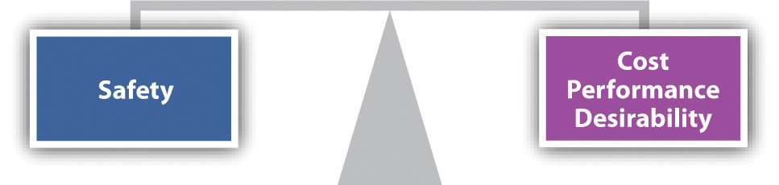

Negligence is the second theory raised in the typical products-liability case. It is a tort theory (as compared to breach of warranty, which is of course a contract theory), and it does have this advantage over warranty theory: privity is never relevant. A pedestrian is struck in an intersection by a car whose brakes were defectively manufactured. Under no circumstances would breach of warranty be a useful cause of action for the pedestrian—there is no privity at all. Negligence is considered in detail in the Chapter 7 "Introduction to Tort Law" on torts; it basically means lack of due care.
Negligence theory in products liability is most useful in two types of cases: defective design and defective warnings.
Manufacturers can be, and often are, held liable for injuries caused by products that were defectively designed. The question is whether the designer used reasonable care in designing a product reasonably safe for its foreseeable use. The concern over reasonableness and standards of care are elements of negligence theory.
Defective-design cases can pose severe problems for manufacturing and safety engineers. More safety means more cost. Designs altered to improve safety may impair functionality and make the product less desirable to consumers. At what point safety comes into reasonable balance with performance, cost, and desirability (see Figure 17.3 "The Reasonable Design Balance") is impossible to forecast accurately, though some factors can be taken into account. For example, if other manufacturers are marketing comparable products whose design are intrinsically safer, the less-safe products are likely to lose a test of reasonableness in court.
Figure 17.3 The Reasonable Design Balance
We noted that a product may be defective if the manufacturer failed to warn the user of potential dangers. Whether a warning should have been affixed is often a question of what is reasonably foreseeable, and the failure to affix a warning will be treated as negligence. The manufacturer of a weed killer with poisonous ingredients is certainly acting negligently when it fails to warn the consumer that the contents are potentially lethal.
The law governing the necessity to warn and the adequacy of warnings is complex. What is reasonable turns on the degree to which a product is likely to be misused and, as the disturbing Laaperi case (Section 17.6.3 "Failure to Warn") illustrates, whether the hazard is obvious.
Negligence is an ancient cause of action and, as was discussed in the torts chapter, it carries with it a number of well-developed defenses. Two categories may be mentioned: common-law defenses and preemption.
Among the problems confronting a plaintiff with a claim of negligence in products-liability suits (again, these concepts are discussed in the torts chapter) are the following:
PreemptionThe theory that a federal law supersedes any inconsistent state law or regulation. (or “pre-emption”) is illustrated by this problem: suppose there is a federal standard concerning the product, and the defendant manufacturer meets it, but the standard is not really very protective. (It is not uncommon, of course, for federal standard makers of all types to be significantly influenced by lobbyists for the industries being regulated by the standards.) Is it enough for the manufacturer to point to its satisfaction of the standard so that such satisfaction preempts (takes over) any common-law negligence claim? “We built the machine to federal standards: we can’t be liable. Our compliance with the federal safety standard is an affirmative defense.”
Preemption is typically raised as a defense in suits about (1) cigarettes, (2) FDA-approved medical devices, (3) motor-boat propellers, (4) pesticides, and (5) motor vehicles. This is a complex area of law. Questions inevitably arise as to whether there was federal preemption, express or implied. Sometimes courts find preemption and the consumer loses; sometimes the courts don’t find preemption and the case goes forward. According to one lawyer who works in this field, there has been “increasing pressure on both the regulatory and congressional fronts to preempt state laws.” That is, the usual defendants (manufacturers) push Congress and the regulatory agencies to state explicitly in the law that the federal standards preempt and defeat state law.C. Richard Newsome and Andrew F. Knopf, “Federal Preemption: Products Lawyers Beware,” Florida Justice Association Journal, July 27, 2007, accessed March 1, 2011, http://www.newsomelaw.com/resources/articles/federal-preemption-products-lawyers-beware.
Negligence is a second possible cause of action for products-liability claimants. A main advantage is that no issues of privity are relevant, but there are often problems of proof; there are a number of robust common-law defenses, and federal preemption is a recurring concern for plaintiffs’ lawyers.